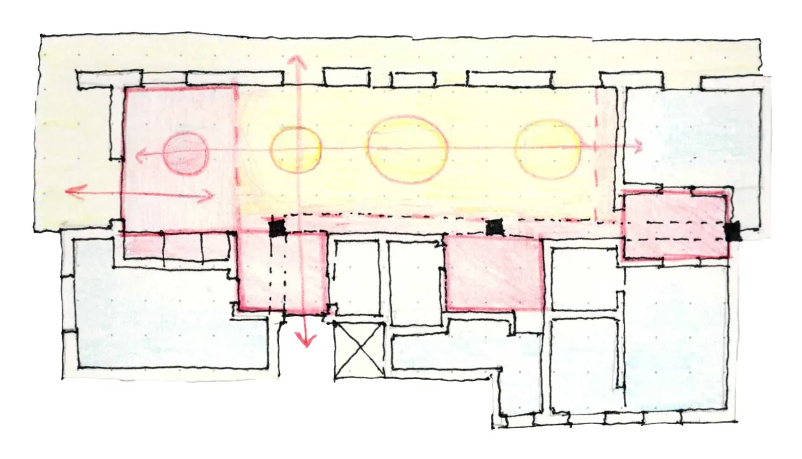
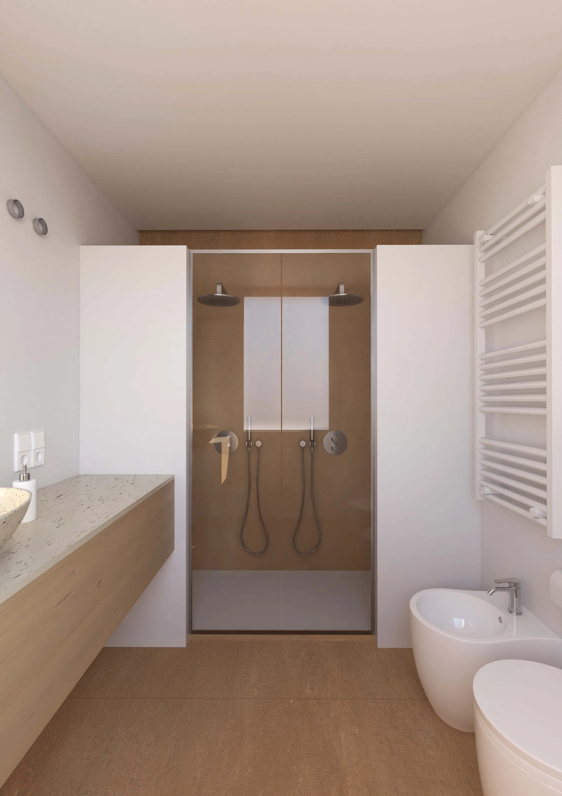

1 / 6
Casa AD
Apartment
Via Malmusi, Modena, Italy
2025
with tilde studio
Apartment
Via Malmusi, Modena, Italy
2025
with tilde studio
The living area is a single space along the windows, marked by portals. Renders of the living area and shower VISION.
Samuele SilvestriArchitect
Via Asiago 58, 41125 Modena
info@samuelesilvestriarchitetto.com
+39 366 493 8286
Instagram Order of Architects of Modena, no. 1437 – section A
VAT no. IT04180440366 Privacy (in Italian)



